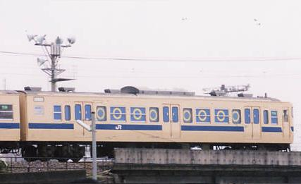
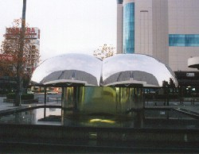

高校生クイズ
高校生クイズ・・・それは全国の現役高校生が知力、体力、運の強さを競い合う毎年恒例の夏の一大イベント、ライオンスペシャル全国高等学校クイズ選手権
――高校生クイズ応募要綱よりつまりは
とりあえず高校生なら出とけってことです。最初に僕が出場したのは高２の時。高１の時同じクラスだった友達に誘われて出場を決意。最初から優勝できるとは思っていなかったため、目標としてはテレビに映ることでした。手っ取り早くテレビに出る方法として思いついたのが、
会場に一番乗りすること。
そのため、会場のJR貨物ヤード跡地に一番乗りするため、前日は３人のメンバーの中で一番広島駅近くに住む友達の家に泊まることに。
その友達（通称おっさん）今回は本人には許可とって掲載。
白黒画像で見にくいかもしれません。でも彼、
まだこの世の人です。お間違えのないよう。なんでこんなのしか持ってないんだ、俺。それでこの友達の家におじゃましました。大会当日、出発前におっさんの飼っている犬におしっこをひっかけられるハプニングに見舞われながらも５時４５分くらいの電車に乗って広島へ。１０分ちょっとで広島駅に到着。開会が１０時だったのでこのくらい早ければ大丈夫だろうと思いながら会場到着。
だがしかし！会場が見えてくると認めたくない現実も見えてきた・・すでに誰かいるのである、明らかに高校生であろう３人組が３組も。そんなわけで１番乗りテレビ映ろう作戦は見事に失敗。でも会場に着いて問題になったのはテレビに映る機会を失ったことではなくて、
（この時６時半）
これはもうかなりの致命的な問題であった。一番乗りならインタビューを受けることができただろうに、大会開始直前にくるならここで待つ必要もなかったのに、そんな３人に無情の雨が降り注ぐ・・。ってかこんな日に降ってくんじゃねーよ雨。むなしさに駆られながらも時は過ぎ大会は始まる。その頃には雨もやみ、そして今大会からの新司会、ラルフ鈴木の登場となった。
「第２１回全国高等学校クイズ選手権
中国大会ーー！！」
うおぉぉぉーー！
こういう時はとりあえずノッていけ、高校生であるがゆえの芸当であったと思う（といいながらも今でもそうだが）。一問目が出題され、○、×ゾーンへと人が動く。移動がある程度終わったくらいに、新司会ラルフから、
ラルフ「２１世紀最初の高校生クイズを制するのは、俺たちだ！パワァーー！」
高校生「パワァーーッ!!」
ラルフ「まだまだまだまだーっ。まいりましょう。爆発させろ！ その、みなぎる、パワァーー！」
高校生「パワァーーッ!!」
ラルフ「よくなってきたよくなってきたー！まいりましょう。今一度、巻き起こせ、一夏のクイズレボリューションッ、
パワァーー！」
高校生「パワァーーッ!!」
ラルフ「パワァーー！！」
高校生「パワァーーッ!!」
ラルフ「パワァーー！！」
高校生「パワァーーッ!!」
ここまで読んでると分かると思うんですが、うざいんです、いいかげん。だいたいクイズやるのになぜパワーを爆発させる必要があるのだ。爆発させるのは知識だろうが。それになんだ？クイズレボリューションって？かけ声が「ファイアー！」でも「パワァー！」でもやってること結局は一緒。何回言わすんかっての。でも現場にいる時にはそうは思わずただうれしげに「うおぉーーっ！」って叫んでましたけどね（ちゃんとパワーって言え）。この声だし合戦オープニング終わった後で第一問目結果発表。一問目僕達は○の方にいました。結果発表の仕方は正解を書いた電車が通るとのことでした、みんな線路の方に注目。するとガタンゴトン・・。
＊中国地方の電車ってこんなんです。
ラルフ「○だぁーーっ！！」
○の高校生「うおぉーーっ！！」
もう歓喜というのはこのことと言わんばかり大騒ぎ。まあただここで騒いどかないともう騒ぐ機会ないからね。二問目はよく覚えてます、
「世界の都市の名前には、
『マール』もあれば『バーツ』もある。」
こういう問題でした。なんでよく覚えてるかって言ったらもちろん、ここで間違えたから。正解は○だったんです。ですが僕はこの問題でメンバー唯一の理系として気付くべきでした、
ないと証明することの難しさに・・。
（遠くを見つめながら・・）
そうして僕達の高２の高校生クイズは幕を閉じました・・。
そして一年の時が経ち、高３の夏休みへ。受験生とはいえまだ夏、去年参加したメンバーで再度挑戦することに。今年は一番乗りとかは考えず気楽に行こうってことになりました。そして大会当日、集合場所の広島駅前の噴水、

噴水前に着いて同じチームの二人と合流、いざ会場へ向かわんとするときに、３人組の同じ高校の友達に会いました。最初は今年は参加するんだったのかと思ったが、どうやらその３人は出場するのに必要な登録用紙を持っていない。「出場登録はしたん？」そう聞くと、
「してないけど大丈夫、昨日電話しといたから」
・・・？
言われた時どうして大丈夫なのか分からなかった。昨日電話しといた？君らはそんなVIPじゃないだろう？詳しい話を聞いてみると、
「だから昨日大会本部に電話したんだって、」
『「まだ登録用紙
届かないんですけど」って』
「そしたら『当日用紙渡しますので来てください』って言われたわけ」
はは〜ん、こいつら天才か？すごいこと考え付くなと思いながら一緒に会場へ。会場到着後、登録を済ませるため本部へ行く３人と別れる。その３人を目で追っていたのだが、
本部の前は長蛇の列
これみんな当日参加の登録用紙が届かなかった人たちなのか・・。ってこんなに郵便事故起きるかよ！みんな考えることは一緒ってことか。
この日は朝からずっと雨でこういう外でのイベントには向かない日でした。もちろんずっと傘さしてたんですが、大会始まるにあたって、
「密集して危険なので傘ささないでください」
という命令が下る。もちろん大会の開始は去年と同様「パワァー！」の連呼で始まるため、
一問目始まるまでにもうびしょ濡れ
そんな状態になりながらもこの２チームはなんとか善戦、３問目まで突破した後撃沈す。
それから会場から少し離れ一回戦が終わるのを待つ。そう、敗者復活戦に挑むのである。今回の敗者復活戦は全員でのじゃんけん大会、主催者側のおっさんとのじゃんけんに勝ち続けろとのこと。こういうのもごまかしがきくみんな勝てるのも３回目くらいまで。しかしこの３回までで僕はある仮説をたてた、このおっさんグー、チョキ、パーの順で出してないか？仮説は見事的中で１０回近く勝ち残る。しかしここまでくると他の高校生も気付いているようで７，８回目くらいから誰も脱落者が出ない状況であった。しかし、俺はそこでおっさんの目がスタッフと目配せをしたのを見逃さなかった・・。
・・・・くる！！
やってることはじゃんけんなのだが復活かかっているので超真剣。ここで今までの流れとは裏をいく手を出す、見事読みは的中し残りの高校生はあと少し・・いける！と思うもそこで終わるのが俺の人生、山乗り越えたと思って気を抜いて敗退。最終戦績は敗者復活まであと２回という中途半端で終わりました。それから気をとりなおして広島で遊んで帰宅。次の日風邪引きました。
〜高校生クイズ：戦績〜
第２１回大会：１回戦２問目敗退
第２２回大会：１回戦四問目敗退
（敗者復活まであと２回）
戻る